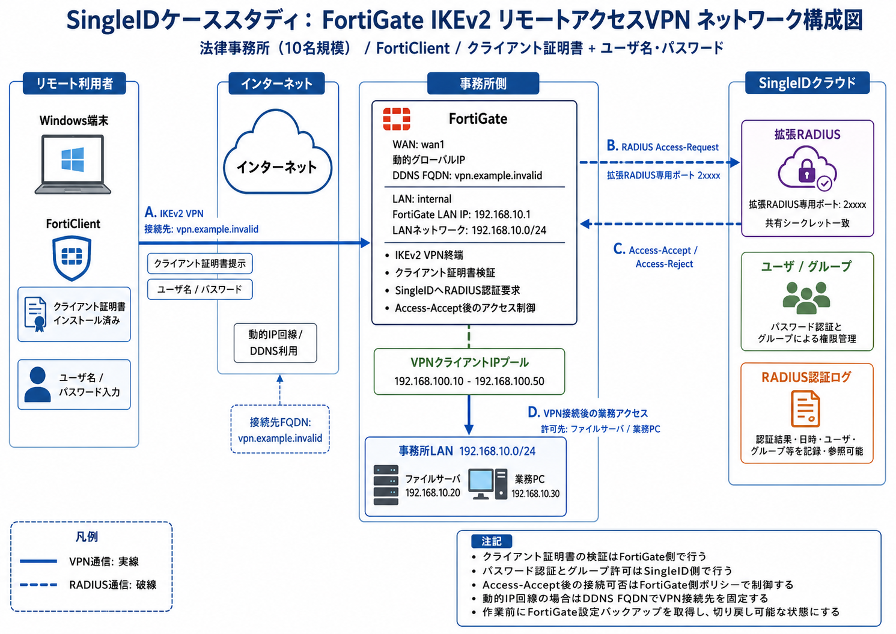

ネットワーク構成図

既存設定ファイルから抽出するネットワーク情報
| WAN側 | インターフェース名、IP取得方式、DDNS設定、管理GUIポート、既存VPNで使っている待受ポートを抽出する。 |
|---|---|
| LAN側 | インターフェース名、LAN側IP、事務所LANセグメント、社内サーバや業務端末の宛先アドレスを抽出する。 |
| 既存VPN | VPN方式、既存のVPNアドレスプール、ユーザグループ、フェーズ1/2、関連ポリシーを抽出する。 |
| ファイアウォールポリシー | VPNクライアントから事務所LANへ許可している宛先、サービス、NAT有無、ログ取得設定を抽出する。 |
| RADIUS / 認証 | 既存RADIUSサーバ、ローカルユーザ、ユーザグループ、認証に使っているオブジェクトを抽出する。 |
| 証明書 | 既存のCA証明書、サーバ証明書、CRL設定の有無を抽出する。SingleID連携で追加する証明書設定と重複する場合は、置き換え対象を設計書へ記載する。 |
このケースで設計書へ記載する値
| VPN接続先 | vpn.example.invalid。動的IP回線のため、FortiClientの接続先はDDNS FQDNとする。 |
|---|---|
| FortiGateインターフェース | WAN: wan1。LAN: internal。事務所LAN: 192.168.10.0/24。 |
| VPNクライアントIPプール | 既存VPNで使っているアドレスプールを原則継続する。このケースでは 192.168.100.10 〜 192.168.100.50 を既存値のサンプルとして扱う。既存値が事務所LANや他VPNと重複している場合だけ変更する。 |
| 許可宛先 | ファイルサーバ 192.168.10.20、業務PC 192.168.10.30。必要な宛先だけをVPNポリシーに入れる。 |
| SingleID拡張RADIUS | FortiGateからSingleID拡張RADIUSの専用ポートへUDP通信する。宛先IPとポートはSingleID管理者ポータルの表示値を使う。 |